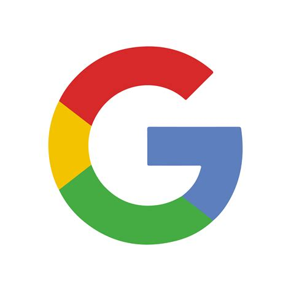
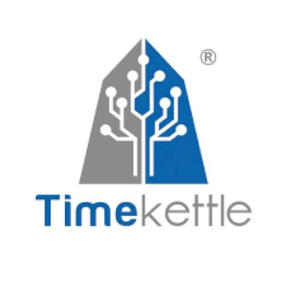

Veille Technologique
Les oreillettes de traduction instantanée : vers la fin de la barrière linguistique ?
Flash Actu — Août 2026
1. Traduttori simultanei : smartphone, auricolari e occhiali smart
Source : Zazoom.it | Date : 10 Août 2026
En 2026, les traducteurs simultanés sont sortis des simples applications pour s'intégrer dans des dispositifs portables du quotidien. Les écouteurs traduisent pendant que vous parlez, les lunettes intelligentes affichent la traduction en temps réel, et les smartphones interprètent les appels téléphoniques.
- La traduction ne nécessite plus de taper ou de montrer l'écran : elle se fait en temps réel.
- Les appareils récents intègrent déjà des fonctionnalités de traduction vocale sans que l'utilisateur le sache.
- L'article propose une sélection des 7 meilleurs écouteurs avec traduction simultanée pour 2026.
2. Tous polyglottes ! C'est déjà possible avec l'IA et une paire d'écouteurs
Source : Ouest-France (Partir) | Date : Août 2026
La barrière de la langue n'est plus un obstacle pour les voyageurs grâce à l'association de l'IA et des écouteurs Bluetooth. Cette technologie transforme des écouteurs ordinaires en véritables outils d'interprétation en temps réel.
- Le micro des écouteurs isole les voix et supprime les bruits ambiants.
- L'IA transforme les paroles en texte, les traduit en analysant le contexte et le ton, puis génère un retour audio dans l'oreille de l'utilisateur.
- La latence est désormais réduite à 1 ou 2 secondes (contre 5 à 10 auparavant), rendant les conversations plus fluides et naturelles.
- La traduction est devenue « intelligente » : elle reproduit les émotions et l'intonation, avec des voix de synthèse réalistes.
3. Écouteurs traduction instantanée : Le futur de la communication sans frontières
Source : Soundcore Blog | Date : 25 Mai 2026
Les écouteurs traduction instantanée transforment radicalement la manière dont nous interagissons avec le monde, que ce soit pour le travail, les études ou les voyages internationaux. Ils agissent comme des interprètes personnels nichés au creux des oreilles.
- Le fonctionnement repose sur une synergie entre le matériel (microphones haute fidélité) et le cloud (algorithmes d'IA puissants).
- La latence est l'ennemi numéro un : un bon système doit offrir une réponse quasi immédiate.
- Les critères de choix incluent : la vitesse de traitement, la précision sémantique et la capacité des microphones à isoler la voix dans le bruit.
4. Top 5 BEST Translation Earbuds in 2026
Source : YouTube (Top 5 Picks Channel) | Date : 16 Août 2026
Cette vidéo teste cinq des écouteurs à traduction en temps réel les plus intéressants de 2026, dans des situations réelles : restaurants, taxis, réunions professionnelles et conversations multilingues.
- SonaBuds — Option économique
- soundcore AeroFit 2 AI Assistant — Bon rapport qualité-prix
- soundcore Liberty 5 Pro Max — Performant
- Timekettle W4 — Très performant
- Timekettle W4 Pro — Le meilleur selon le testeur
Problématique
Les oreillettes de traduction instantanée peuvent-elles réellement remplacer l'apprentissage des langues et devenir un outil fiable dans la communication mondiale ?
Cette question guide toute ma recherche.
Comment ça marche ?
Le pipeline de la traduction instantanée
C'est un processus en 4 étapes clés qui doit être quasi-instantané :
- 1. Capture et Reconnaissance (ASR) : Le micro capte la voix, l'IA la transforme en texte (Speech-to-Text). Les nouveaux modèles gèrent le bruit et les accents.
- 2. Traduction Neuronale (NMT) : Le texte est traduit par un modèle d'IA (comme Gemini). C'est là que le contexte et l'argot sont analysés pour une traduction fidèle.
- 3. Synthèse Vocale (TTS) : Le texte traduit est transformé en audio, en imitant le ton et la cadence de la voix originale.
- 4. Infrastructure : Tout ce calcul est soit fait sur le smartphone, soit dans le cloud (pour les modèles les plus puissants).
Synthèse personnelle à partir des articles de Soundcore, Ouest-France et Frandroid.
Les Acteurs du Marché (2026)

- Produit : Google Traduction + Gemini
- Compatible avec tous les écouteurs
- IA Gemini pour le contexte

Apple
- Produit : AirPods + Apple Intelligence
- Traitement local (confidentialité)
- Prévu fin 2025 avec iOS 19

Timekettle
- Produit : W4 Pro, WT2 Edge
- Spécialiste de la traduction
- Classé n°1 en 2026

Waverly Labs
- Produit : Ambassador
- Haut de gamme professionnel
- Idéal pour les réunions

soundcore
- Produit : AeroFit 2, Liberty 5
- Bon rapport qualité-prix
- Assistant IA intégré
Sources : Sites officiels, comparatifs web et vidéo test 2026.
Avantages et Inconvénients
Avantages
- Supprime la barrière linguistique immédiate
- Accessible à tous (Google)
- Favorise les échanges pro et perso
- Latence réduite à 1-2 secondes
- Traduction contextuelle et émotionnelle
Inconvénients
- Dépendance à une connexion
- Pas fiable à 100% (humour, expressions)
- Problème de confidentialité
- Appauvrissement culturel potentiel
- Latence encore perceptible
Enjeux pour les Organisations
Entreprises
- Réunions internationales fluides
- Moins de frais d'interprètes
Sécurité
- Risque de fuite via le cloud
- Enjeu RGPD majeur
Tourisme
- Accueil des touristes facilité
- Réduction des malentendus
Éducation
- Outil pédagogique
- Aide pour les élèves en difficulté
Inspiré de l'analyse du Soir et des articles Zazoom / Ouest-France.
Méthodologie de Veille
Outils utilisés :
- Google News — alertes "traduction instantanée", "AI translation earbuds"
- Sites tech : Frandroid, Les Numériques, ZDNet, TechRadar, Soundcore Blog
- Sites généralistes : Ouest-France, Zazoom.it
- Vidéos : YouTube (chaînes tech)
- Replay radio : Franceinfo
- Sites officiels : Google Blog, Apple Newsroom
Fréquence :
1 à 2 fois par semaine.
Conclusion
Les oreillettes de traduction instantanée ne remplaceront pas l'apprentissage des langues. La langue, c'est la culture, l'émotion, l'humour... des choses qu'une IA ne maîtrise pas encore parfaitement.
En 2026, les traducteurs simultanés sont sortis des applications pour s'intégrer dans des objets du quotidien (écouteurs, lunettes, smartphones), rendant la barrière linguistique de moins en moins infranchissable. L'avenir sera probablement une synergie entre l'IA pour la compréhension immédiate et l'apprentissage humain pour la richesse des échanges.
Sources : Zazoom (10/08/2026), Ouest-France (08/2026), Soundcore (25/05/2026), YouTube (16/08/2026).